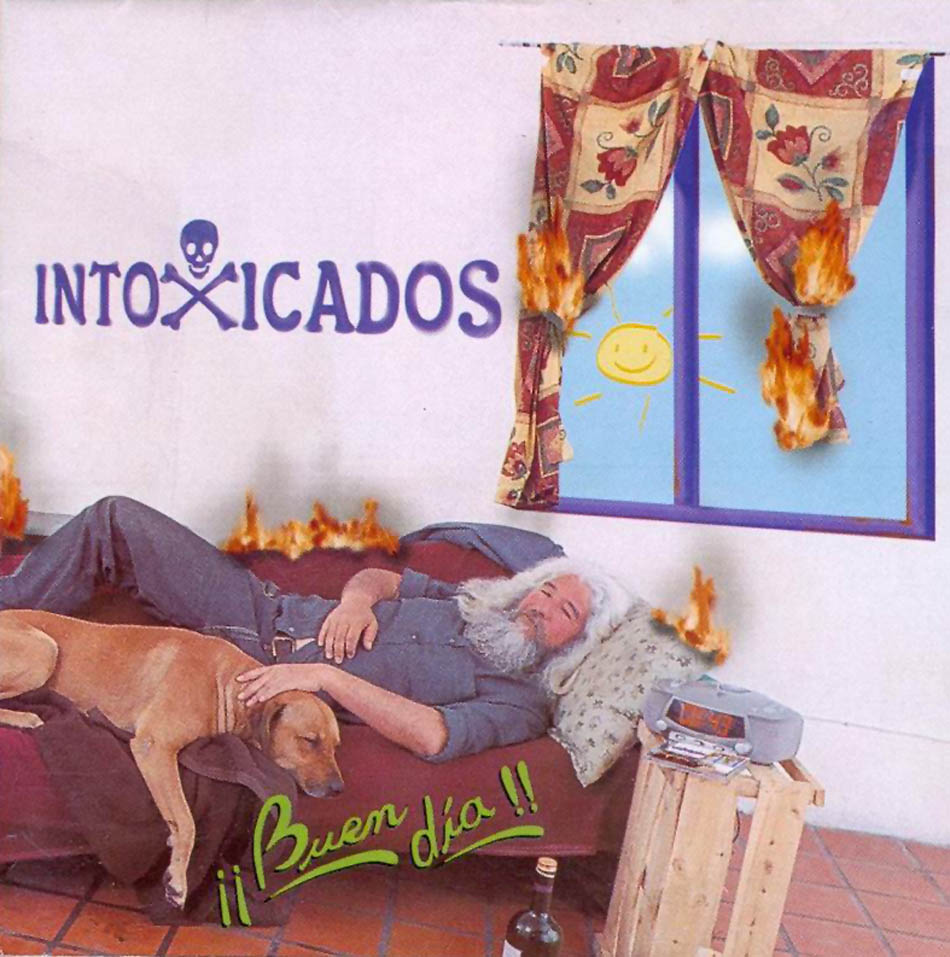

|
 |
 |
 |
 |
| Demos, Rarezas y Otras Yerbas (1993) Temas destacados: "Volver a Casa" , "Ey Nena" |
 Buen dia (2001) Temas destacados: ""Mi inteligencia intrapersonal", "Se fue al cielo", "Quieren rock", "El rey" |
Sigue pegando (2002) Temas destacados: "Todo sigue igual", "Intoxicado", "Lo artesanal", "Me gustas mucho" |
| Viejas Locas (1995) Temas destacados: "Intoxicado", "Nena me gustas asi", "Lo artesanal" |
 No es solo Rock&Roll (2003) No es solo Rock&Roll (2003)Temas destacados: "Esta saliendo el sol", "Volver a casa", "De la guitarra", "No tengo ganas", "Don electron" |
 Contra la pared (2011) Contra la pared (2011)Temas destacados: "Contra la pared", "Tirado en la estacion", "No me pienso levantar" |
| Hermanos de sangre (1997) Temas destacados: "Hermanos de sangre", "Perra", "Aunque a nadie ya le importe", "Psicodelica mujer" |
 Otro dia en el planeta tierra (2006) Otro dia en el planeta tierra (2006)Temas destacados: "Ninia de Tilcara", "Nunca Quise", "Fuiste lo mejor", "Fuego", "Espero que la vida" |
 |
 Especial (1999) Especial (1999)Temas destacados: "Todo sigue igual", "Me gustas mucho", "Homero", "Una vez mas", "El arbol de la vida", "¿Que vas a hacer tan sola hoy?" |
 El exilio de las especies (2008) El exilio de las especies (2008)Temas destacados: "Noche con amigos", "Casi sin pensar", "Del mar" |